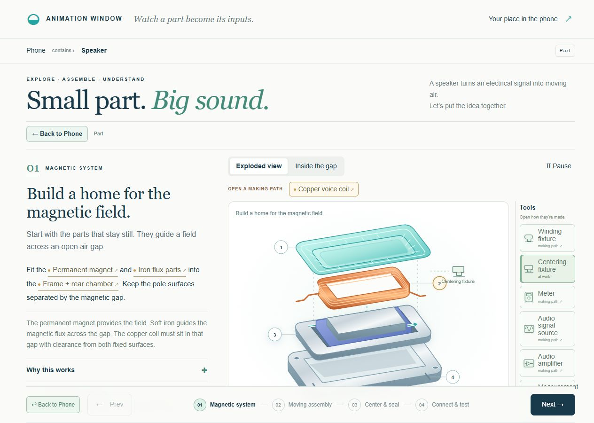
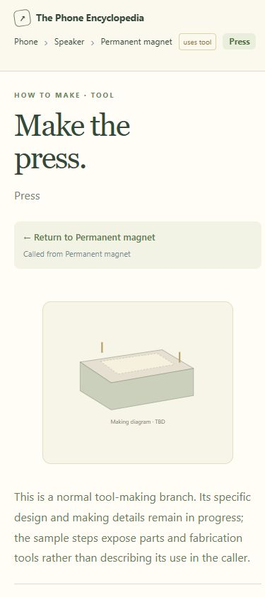
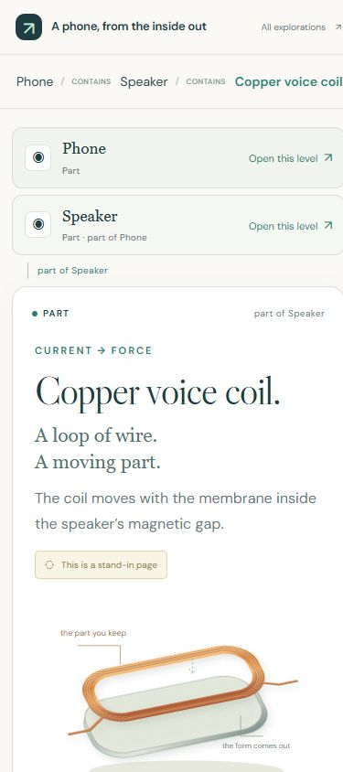

Review 2 · revised flows.




Phone views.




Stand-in content is marked in the prototypes. Native touch pinch is implemented in Zoom; this review used desktop wheel/pan and phone-size layouts.



Stand-in content is marked in the prototypes. Native touch pinch is implemented in Zoom; this review used desktop wheel/pan and phone-size layouts.